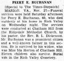

Brandon's Family Tree
Description
| Type | Value |
|---|---|
| Book/Periodical Name | The Times-Dispatch |
| Place | Marion, VA |
| Date | 27 November 1933 |
Entries assigned to this source
| Events |
|---|
 Obituary Reference: Peery Eugene Buchanan Obituary Reference: Peery Eugene Buchanan |
| Death: Peery Eugene Buchanan |
Text
| PEERY E. BUCHANAN [Special to the Times-Dispatch] MARION VA., Nov. 27--Funeral services were held Saturday afternoon for Peery E. Buchanan, 60, who died suddently at his home in Rich Valley on Wednesday night. The services were conducted at Chatham Hill from the Ridgedale Methodist Church, by his pastor, the Rev. R. L. Dickenson. Mr. Buchanan was a prominent citzen and a well-known farmer in this section. He is survived by his widow, who was Miss Ida Horton of Chatnam Hill. Eleven children also survive. Burial was in the Rich Valley Cemetary. |
Media
Pictures

peery buchanan obit